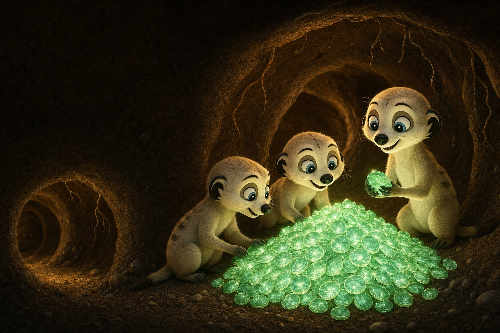
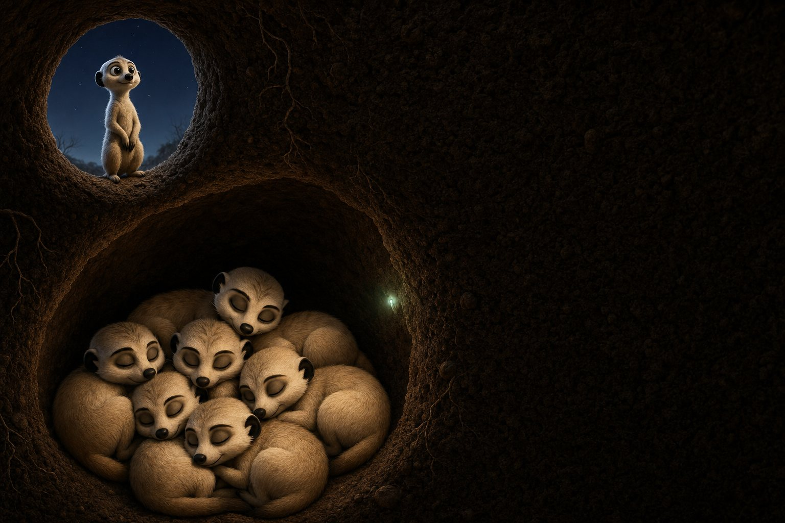
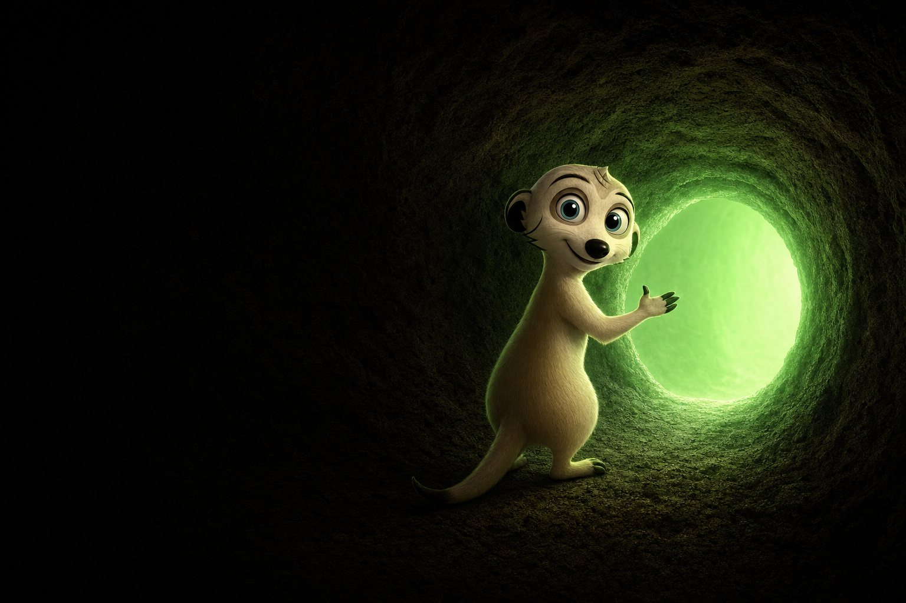

How the mob gets fed
Every trade drops 3% into the den.
StonkFun turns that cut into $NEAR and hands it to whoever is holding. Not more $NEARKAT. Not an IOU from the sky. The actual ration.
Live from StonkFun. 3% transfer tax, quote-only fees, paid in $NEAR.
Why $NEAR, not more $NEARKAT. $NEAR is what validators stake and what confidential execution gets paid in. Feeding the mob with it ties the meme to the chain it came from.
Ration estimator
What's my bag earning?
Built from the $NEAR that actually landed in holder wallets. Not a cut of volume. Enter your position and the den does the maths.
Worth —
≈ — / day
Waiting for the latest observed payout rate…
- Position
- — NEARKAT
- Value
- — live price
- Share of supply eligible supply
- Observed daily rate
- — simple annualized
Wen lambo +
Reward estimates use observed distributions and are not guaranteed. Activity, holder composition, payout timing, execution and market prices all change the result.

Why meerkats
Privacy is just good sentry work.
Wild meerkats survive because the colony is distributed. No single tunnel is the whole home. Lookouts watch the horizon so the rest of the mob can dig, feed and raise young without advertising every move.
-
Many tunnels, not one vault.
A den is a graph. If one entrance collapses, traffic reroutes. That is sharding and P2P routing, in dirt form.
-
One lookout, quiet interior.
Sentries stand up so the warren stays private. Keep balances, routes and timing off the open sky where predators and MEV bots hunt.
-
Mob first, no king.
Meerkats are not lone heroes. Builders, validators and holders are the colony. NearKat points at the network. It is not a substitute for it.
nearkats, many holes. no single door. nearkats, sentry up. interior quiet. nearkats, p2p = mob. privacy = lookout. nearkats, rewards in $NEAR. not IOUs from the sky.
What NEAR is doing now
The den got upgrades.
NEAR spent 2026 turning the chain into a private, multi-chain settlement layer for people and agents. Closer to a living colony than a public bulletin board. Four new branches, dug this year.
-
BRANCH 01
Confidential by default
Confidential Intents run on a private shard with a TEE bridge. Swaps, balances and routes stay out of the public mempool, so lookouts and MEV cannot hunt the interior.
-
BRANCH 02
NEAR Intents
Say the outcome. Solvers find the path across 30+ chains. One account moves value without babysitting bridges and gas on every network. One den, many exits.
-
BRANCH 03
Elastic Nightshade
Dynamic resharding splits hot tunnels and merges quiet ones in production. The colony adds capacity without every sentry carrying the whole map.
-
BRANCH 04
AI that stays quiet
Agents as users. Confidential inference, stake-for-compute, agents that settle across chains without leaking strategy. Privacy here is not a costume.
Read more at near.org and near.com. Not affiliated with NEAR Protocol.

Ways in
Never one door.
Hold $NEARKAT and you are in the mob. Rations land in $NEAR while you hold. Amounts, timing and eligibility get posted with each drop.
6UtY9iTZMQQ5QZVrbzFnNaJntV7oySm9k97mvwnuZcxr